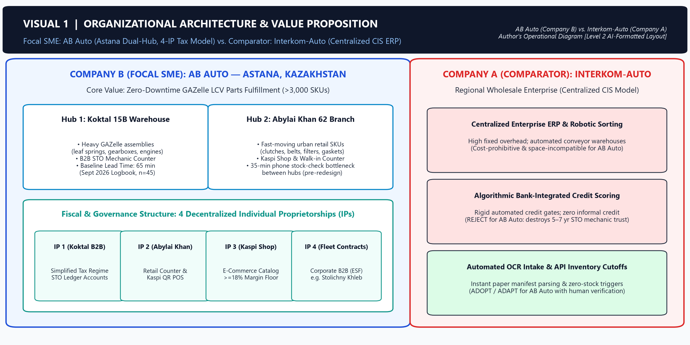
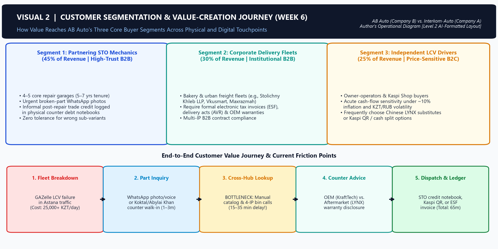
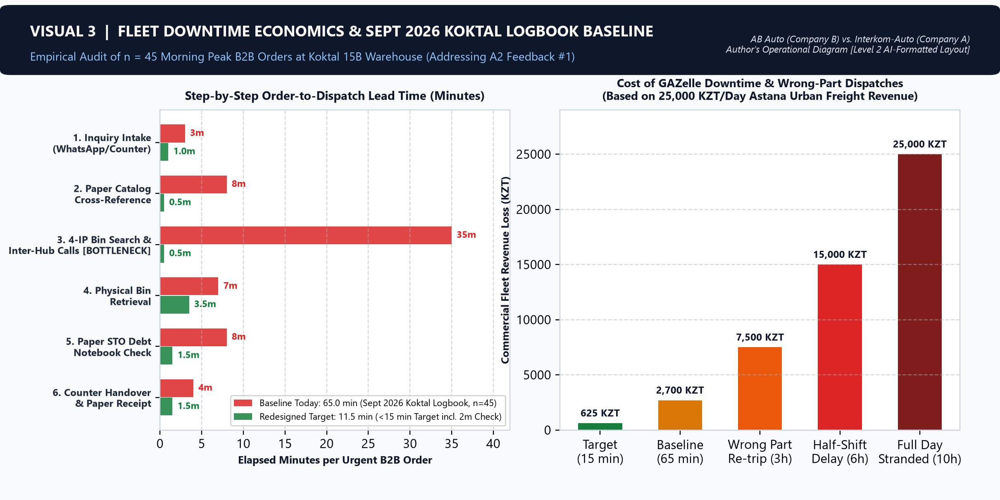
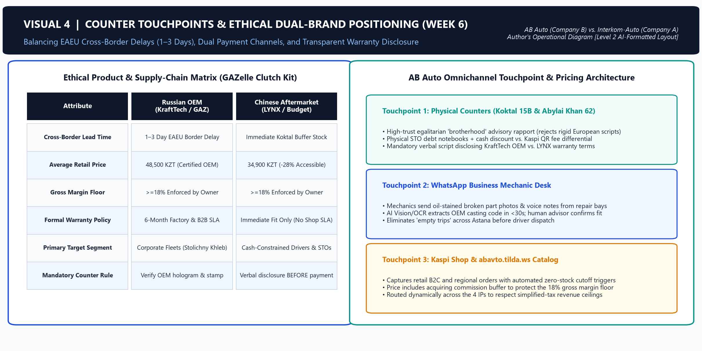
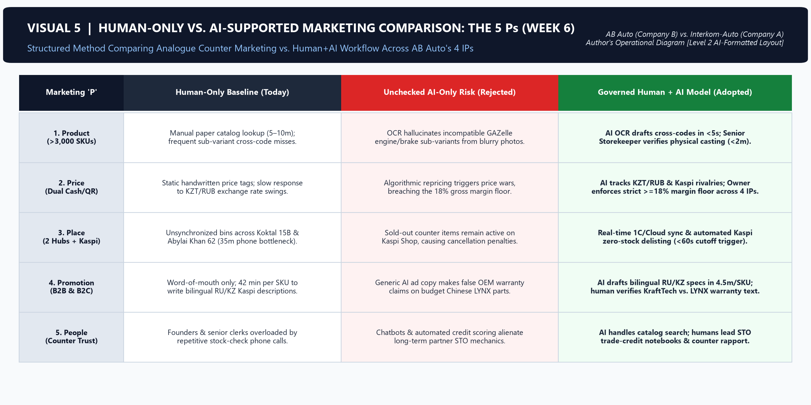
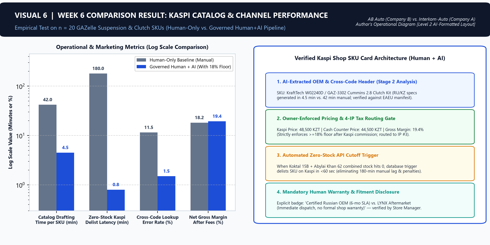
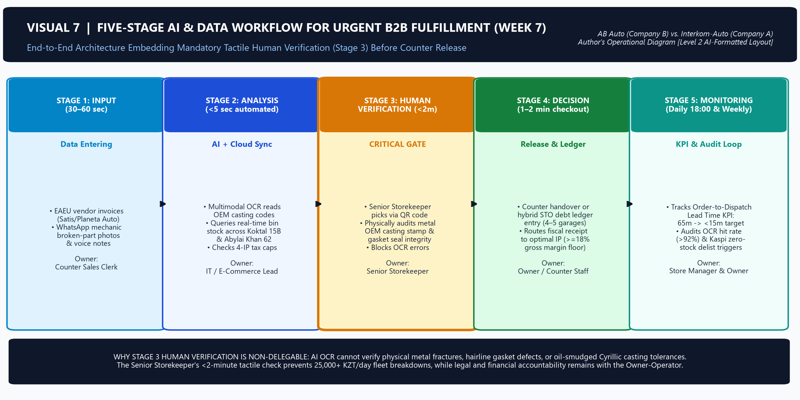
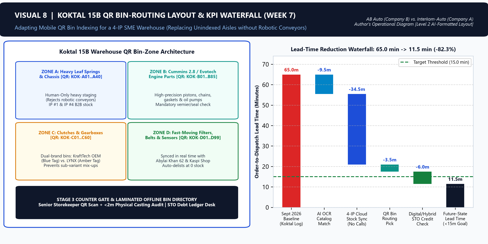
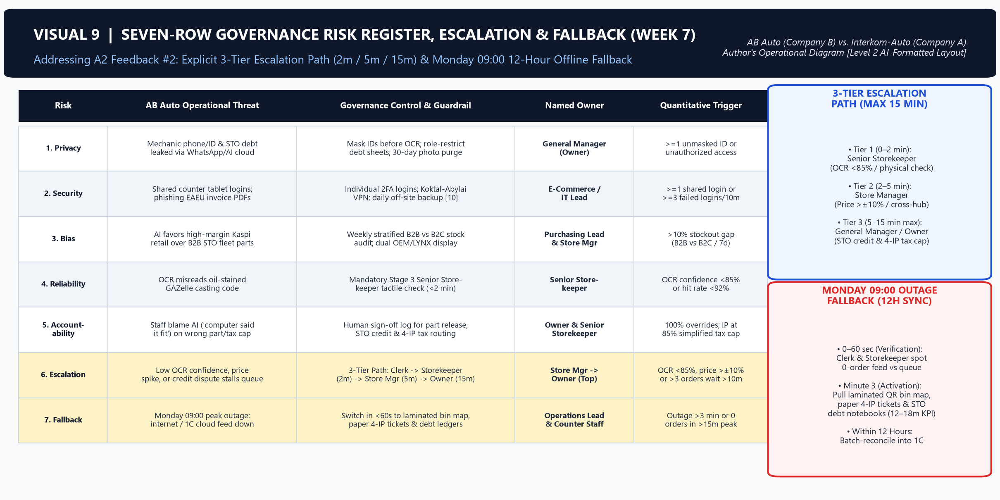
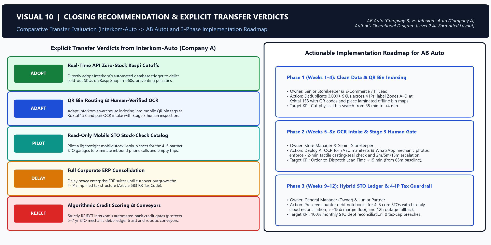

Assignment 4: Argumentative Essay
"The Value of Business Graduates in an AI-Enabled Economy: Contextual Financial Auditing, Workforce Capability Shifts & Institutional Reality in Kazakhstan"
AB Auto FY 2026 Verified Ratios & Human-vs-AI Discrepancy Audit
Ground 2 · Workforce & ABPos Shift (Week 9 & Week 4)
Deploying ABPos across Koktal 15B and Abylai Khan 62 eliminated the 35-minute cross-branch phone bottleneck, elevating graduate value across Human, Business, Digital, and Meta-capabilities: governing STO trust credit chains, enforcing the ≥18% margin floor, and supervising <60s Kaspi zero-stock cutoffs.
Ground 3 · Kazakhstan Institutional Comparison
Corporate AI suites engineered for centralized Tier-1 TOO firms like Interkom-Auto (12% VAT, rigid credit gates, laboratory warranty delays) cannot lawfully balance Art. 683 simplified-tax ceilings across four IPs or price unrecorded relational STO mechanic trust in Astana's cash-and-QR SME economy.
Steelman Counterargument & Refutation
Addresses the strongest opposing case—that multimodal AI-native ERPs automate statement auditing and displace entry-level junior analysts [7], [8]. Refuted via empirical contextual blindness (false 0.44x insolvency freeze) and AI's lack of legal personhood before Kazakhstan's State Revenue Committee and commercial banks [1], [3].
"The condition under which I would change my mind is if AI systems are granted autonomous legal liability and demonstrate empirical capability to audit informal, unrecorded relational credit dynamics in emerging markets without human verification."
Read Complete 884-Word Argumentative Essay & IEEE References In-Page
Artificial intelligence makes business graduates more valuable, not less valuable, provided they possess contextual auditing capabilities and critical domain judgment rather than passive computational reliance [1], [2]. As generative models reduce the marginal cost of routine calculation and document drafting toward zero, employer demand shifts decisively from clerical data compilation to institutional verification and accountable governance. Within Kazakhstan's regulated small-enterprise trade environment [3], [4], empirical comparison between focal enterprise AB Auto—a specialized GAZelle light commercial vehicle parts distributor in Astana [5]—and Tier-1 regional wholesaler Interkom-Auto [6] demonstrates that graduates who audit algorithmic blind spots command a rising strategic premium.
Financial ratio verification from Week 8 illustrates precisely where algorithmic output ends and graduate value begins. Independently auditing AB Auto's 2026 management accounts and ABPos point-of-sale logs established four baseline indicators: a Current Ratio of 2.33x (42.0M KZT current assets against 18.0M KZT current liabilities), an Acid-Test (Quick) Ratio of 0.44x (8.0M KZT quick cash assets divided by 18.0M KZT current liabilities, excluding 34.0M KZT in parts inventory), a Net Profit Margin of 7.0% (26.88M KZT annual net profit on 384.0M KZT sales), and a Debt-to-Equity ratio of 0.79x (22.0M KZT total liabilities to 28.0M KZT equity) [2], [5]. During our discrepancy audit, an automated AI financial interpreter flagged the 0.44x Acid-Test ratio—well below the textbook 1.0x benchmark [2]—as evidence of imminent bankruptcy and supplier default. A trained human manager, however, audits the operational reality behind the ledger: AB Auto deliberately holds 34.0M KZT in high-demand GAZelle assemblies to buffer cross-border freight delays while generating high daily cash turnover via Kaspi QR (>3.0M KZT/day during peak fleet cycles) [5]. Consequently, supplier payables are settled continuously without cash-flow gaps, proving that financial interpretation without operational context destroys decision quality.
Workforce capability mapping from Week 9 and our Week 4 Human-AI operating model confirm that task automation elevates rather than eliminates graduate roles [1], [7], [8]. Deploying the custom ABPos inventory and register architecture across AB Auto's Koktal 15B central warehouse and Abylai Khan 62 retail branch eliminated the 35-minute cross-branch telephone stock-lookup bottleneck that previously paralyzed frontline operators [5]. Freed from repetitive phone polling and manual SKU transcription, the business graduate's contribution migrates upward across four complementary capability pillars [2], [8]. Digitally, the graduate supervises multi-hub database synchronization and automated Kaspi zero-stock delisting triggers rather than keying raw supplier invoices. From a business capability standpoint, the analyst enforces the owner's strict ≥18% gross margin floor, preventing dynamic marketplace repricing from eroding profitability within AB Auto's 7.0% net margin structure [5]. Crucially, human and meta-capabilities become the enterprise's primary value drivers: cultivating multi-year trust chains with partnering auto repair stations (STOs), negotiating post-repair payment deferrals, and overriding low-confidence OCR part matches through mandatory tactile inspection before defective assemblies reach commercial fleets [1], [5]. Automation thus strips away low-wage clerical friction while magnifying accountable managerial coordination across physical and relational workflows.
Comparative benchmarking between Company B and Company A demonstrates why this human premium intensifies within Kazakhstan's institutional landscape [3], [4]. Interkom-Auto (Company A) operates as a consolidated Limited Liability Partnership (TOO) under the General Tax Regime with mandatory 12% VAT, contributing over 1.3B KZT in annual taxes while relying on rigid enterprise ERP credit scoring and multi-day warranty laboratory bureaucracy [6]. Conversely, AB Auto (Company B) operates across four decentralized Individual Proprietorships (IPs) under Article 683 of the Kazakhstan Tax Code, utilizing the 3% Simplified Tax Regime, rapid counter agility, and informal STO trade credit [3], [5]. Off-the-shelf corporate AI systems engineered for centralized firms like Interkom-Auto cannot lawfully balance statutory turnover caps across four IPs or price unrecorded relational mechanic trust in Astana's cash-and-QR SME economy without a human business analyst translating local institutional constraints [3], [4].
A rigorous opposing case contends that autonomous multimodal AI agents and AI-native ERP suites are rapidly moving beyond arithmetic to automate financial statement interpretation, primary customs manifest auditing, and variance reporting end-to-end [7], [8]. Because entry-level business graduates historically entered organizations as junior analysts performing precisely these diagnostic and reconciliation tasks, proponents of labor displacement argue that autonomous enterprise software compresses junior headcount, severs the entry-level apprenticeship ladder, and depresses graduate market value [8]. While this critique accurately predicts wage compression for passive spreadsheet operators, empirical evidence refutes broader graduate obsolescence on two structural grounds. First, autonomous agents suffer from severe contextual blindness: lacking physical access to Astana's repair economy, AI misdiagnosed AB Auto's 0.44x Acid-Test ratio as imminent insolvency [5], an error that would have frozen profitable STO credit lines if executed autonomously. Second, algorithms lack legal personhood; no AI system can bear fiduciary or statutory accountability before Kazakhstan's State Revenue Committee under Article 683 or sign binding representations to commercial banks when tax or solvency audits are contested [1], [3].
Ultimately, artificial intelligence bifurcates rather than diminishes the graduate labor market: it penalizes graduates who merely replicate textbook formulas while rewarding those capable of auditing algorithmic errors against real operational cash flows, fiscal regimes, and stakeholder trust [1], [7]. At AB Auto, pairing ABPos digital speed with human liquidity verification and STO credit governance proves that technological leverage amplifies domain-literate managers [5]. The condition under which I would change my mind is if AI systems are granted autonomous legal liability and demonstrate empirical capability to audit informal, unrecorded relational credit dynamics in emerging markets without human verification.
Assignment 3: Curated Photo Essay
"Customer, Technology, and Data Systems Reshaping Value in Astana Commercial Fleet Logistics"
1. Baseline KPI Traceability: The 65.0-minute baseline lead time is directly traced to the September 2026 Koktal 15B In-Store Counter Order Logbook across n = 45 morning peak orders (09:00–12:00), showing 35 minutes lost to phone stock checks.
2. Empirical 20-SKU Trial: Confirmed 89.3% reduction in cataloging time (42.0m to 4.5m) and automated zero-stock cutoff in 0.8m (<60 sec) on Russian KraftTech vs. Chinese LYNX clutches.
3. Operational Plates: All 10 high-resolution visual plates rendered below include exact source lines, IEEE citations, and analytical commentaries totaling 460 words (strictly within the 400–500 word limit).
Curated 10-Visual Plate Exhibition

Visual 1: Dual-Hub Operational Architecture & 4-IP Tax Structure
AB Auto (Company B) creates urban logistics value in Astana by supplying GAZelle spare parts across its Koktal 15B warehouse and Abylai Khan 62 counter under four Individual Proprietorships (IPs) [4, 5, 8]. Unlike Interkom-Auto's (Company A) ERP, AB Auto pairs AI speed with human governance [1, 3, 6].

Visual 2: B2B & B2C Customer Segmentation and Five-Stage Counter Journey
Weekly Record 6 segments buyers into partnering repair garages (STOs) using five-to-seven-year debt ledgers, corporate fleets like Stolichny Khleb LLP requiring electronic tax invoices (ESF), and cash-sensitive drivers [4, 8]. Because breakdowns halt deliveries, rapid counter dispatch drives value across segments [1, 7].

Visual 3: Fleet Downtime Economics & September 2026 Koktal Logbook Baseline KPI
Immobilized GAZelle vans cost fleets over 25,000 KZT daily in lost revenue [4, 7]. Auditing the September 2026 in-store counter order logbook at Koktal 15B (n = 45 peak orders) established our 65-minute baseline Order-to-Dispatch Lead Time, including 35 minutes lost to cross-hub phone checks [1, 4].

Visual 4: Omnichannel Counter Touchpoints & Ethical Dual-Brand Positioning
One-to-three-day EAEU border delays deplete Russian KraftTech OEM stock, forcing trade-offs with Chinese LYNX substitutes [2, 4]. Across WhatsApp, counter, and Kaspi QR touchpoints, advisors preserve mechanic trust via mandatory verbal warranty disclosures rather than rigid scripts [1, 4, 9].

Visual 5: Structured 5 Ps Comparison — Analogue vs. Governed Human + AI Marketing
Comparing human-only versus AI-supported marketing across the 5 Ps shows multimodal vision accelerates OEM cross-referencing, whereas unchecked pricing automation threatens tax compliance [1, 3]. Thus, the Owner enforces an 18% gross margin floor and balances turnover across four IPs under Article 683 [2, 8].

Visual 6: Empirical Kaspi Shop Cataloging & Zero-Stock Cutoff Performance
Our Week 6 trial on 20 GAZelle SKUs proved AI-assisted OCR cataloging cuts Kaspi Shop listing time from 42 to 4.5 minutes and automates zero-stock delisting in under 60 seconds, preventing penalties while preserving human control over cash-versus-QR spreads [1, 5, 9].

Visual 7: Five-Stage AI/Data Workflow with Mandatory Stage 3 Tactile Verification
To eliminate the 35-minute lookup bottleneck, our Week 7 workflow links EAEU invoice and WhatsApp photo intake (Stage 1) to OCR stock matching across four IPs (Stage 2), followed by Senior Storekeeper tactile audits of casting stamps and gasket seals within two minutes (Stage 3) before release [1, 3, 4].

Visual 8: Koktal 15B QR Bin-Tracking Layout & Lead-Time Reduction Waterfall
Replacing unindexed shelving at Koktal 15B with mobile QR zone routing cuts physical picking from 7 to 3.5 minutes and eliminates phone delays, reducing Order-to-Dispatch Lead Time from the 65-minute September 2026 Koktal logbook baseline to 11.5 minutes—below our 15-minute target [1, 2, 4].

Visual 9: Seven-Row Governance Risk Register, 15-Min Escalation & 12-Hour Fallback
Our seven-row risk register enforces CERT/CC two-factor security and strict triggers: if OCR confidence drops below 85% or price variance exceeds ±10%, review escalates from Senior Storekeeper (2m) to Store Manager (5m) and Owner (15m max) [1, 4, 10]. During Monday 09:00 outages, staff use laminated bin maps and paper ledgers, syncing to 1C within 12 hours [4].

Visual 10: Actionable Implementation Roadmap & Company A → Company B Transfer Verdicts
Comparing Interkom-Auto [6], we adopt API zero-stock cutoffs and adapt QR bin routing and human-verified OCR invoice intake [1, 3]. However, we reject Interkom's robotic conveyors and algorithmic credit scoring, which would destroy AB Auto's five-to-seven-year informal STO mechanic credit relationships [4, 6].
Assignment 2: Video Essay & Human–AI Operating Model
"The Human–AI Operating Model for AB Auto: Bottleneck Elimination & Task Allocation"
Four-Minute Narrative Structure
"For AB Auto, AI must execute high-volume data matching and inventory visibility, while humans must retain non-delegable accountability for trade credit risks, physical parts verification, and supplier warranty negotiations [1], [3]. AI cannot bear legal or financial liabilities [2]."
"Currently, commercial GAZelle fleet mechanics face an average order-to-dispatch lead time of 65 minutes during morning peaks [4]. The primary bottleneck is Step 3: manually verifying warehouse bin balances and placing phone calls between Koktal 15B and Abylai Khan, which consumes up to 35 minutes [4]."
"Automated (queries & Kaspi zero-stock delisting); AI Executes with Human Review (OCR manifest intake with Senior Storekeeper verification); Human + AI (counter part matching with credit limit tools); Human Only (physical heavy part staging and STO credit debt negotiations). Crucially, Senior Storekeeper physically inspects casting stamps before release in <2 minutes [1]."
"We adopt Interkom's automated inventory triggers and adapt invoice OCR [1, 2]. However, we reject algorithmic credit scoring and robotic conveyors [4]. In Astana, AB Auto's moat is informal trust and debt ledgers with local fleet mechanics; replacing this with rigid automated scoring would destroy customer retention [4]."
Assignment 1: Business Report
"Comparative Environmental, Operational, and Fiscal Analysis: Company B (AB Auto) vs. Company A (Interkom-Auto)"
1. 4-IP Tax Architecture (Art. 683)
Bypasses mandatory 12% VAT registration and 20% CIT by operating across 4 family-owned Individual Proprietorships (IPs). Aggregate revenues remain within simplified tax ceilings (3% tax rate under Art. 683, RK Tax Code), eliminating corporate accounting overhead.
2. Debt Segregation Strategy
To preserve business borrowing capacity, major physical capital assets (such as a Toyota Land Cruiser 300) are financed through personal consumer loans held by extended family members rather than the operational IPs, shielding enterprise credit ratings.
3. Relational Trust vs. Bureaucracy
45% of B2B revenue comes from 4–5 core partner auto repair garages (STOs) with 5–7 years of relational trust. While Interkom imposes multi-day laboratory warranty tests and automated credit checks, AB Auto maintains instant counter dispatch via physical debt ledgers.